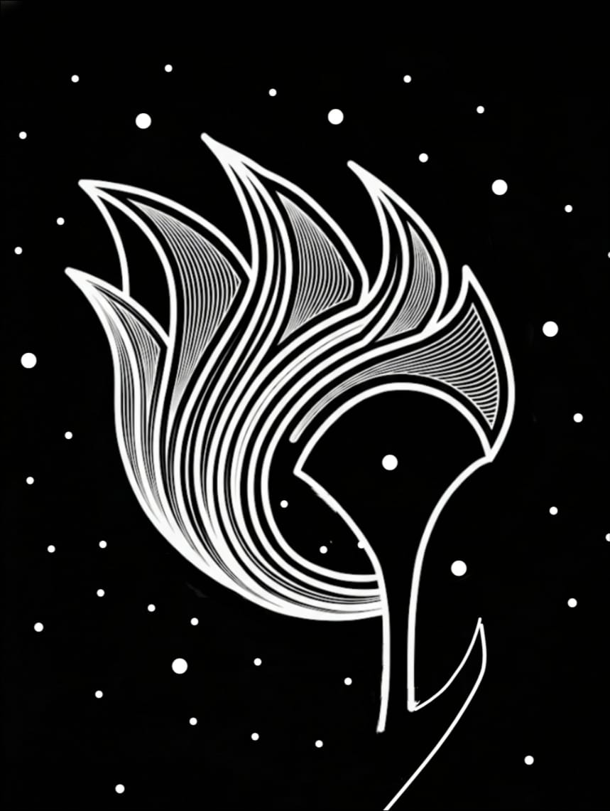
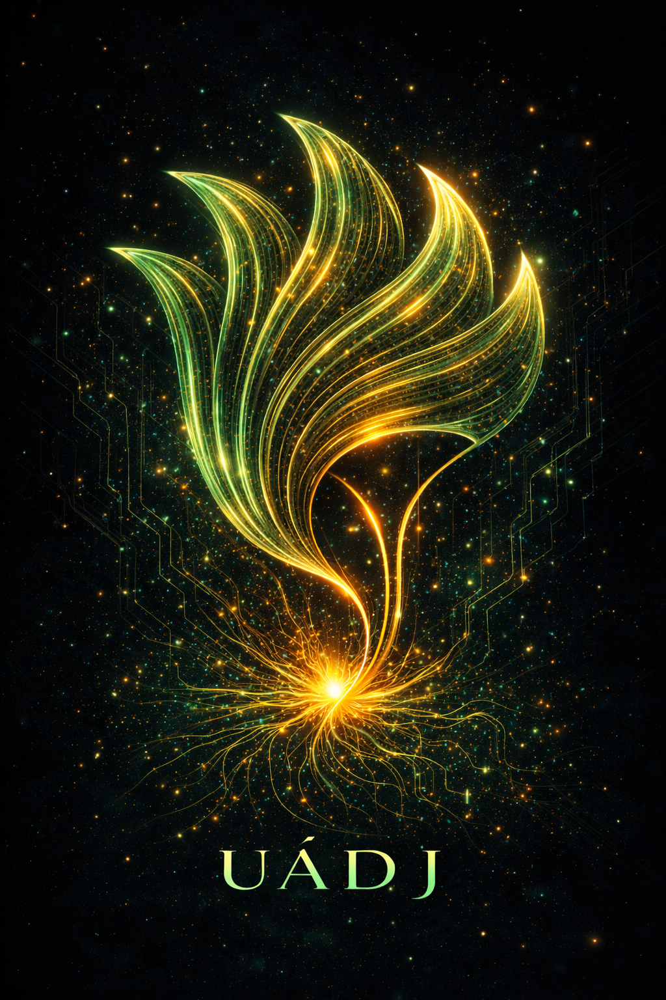

Desbloqueando o Capital ESG: A IA que transforma Complexidade Fiscal em Lucro de Impacto.
Unlocking ESG Capital: The AI that transforms Fiscal Complexity into Impact Profit.
Atualmente, o cenário corporativo brasileiro vive um impasse. Cerca de 78% das empresas afirmam ter o desejo de adotar ou já adotar práticas ESG. Porém a sustentabilidade é frequentemente vista como um "mal necessário" — um custo inevitável e um risco de imagem que não oferece retorno financeiro direto. Existe uma desconexão profunda entre o desejo de inovar e a capacidade de executar.
A realidade dos números revela a dimensão desse desafio:
O desconhecimento das normas e a burocracia de alta complexidade transformam o impacto em um fardo, quando ele deveria ser o seu maior motor de crescimento.
Uádj is a Brazilian firm dedicated to the national market, specializing in the strategic use of Brazil’s robust yet vastly underutilized legal framework for fiscal financing. Currently, the Brazilian corporate landscape is at an impasse. About 78% of companies claim to have the desire to adopt or are already adopting ESG practices. However, sustainability is frequently seen as a "necessary evil"—an inevitable cost and an image risk that offers no direct financial return. There is a deep disconnection between the desire to innovate and the capacity to execute.
The reality of the numbers reveals the scale of this challenge:
The lack of knowledge regarding regulations and high-complexity bureaucracy transforms impact into a burden, when it should be your greatest engine for growth.
Para semear soluções neste cenário, concebemos a Série LexNodes: uma frota de agentes especializados em inteligência jurídica e fiscal. Nossa tecnologia não apenas mapeia iniciativas; ela cria caminhos de custo zero, transformando a conformidade regulatória em ativos financeiros auditáveis.
Nosso primeiro assistente é dedicado à Lei do Bem (Lei 11.196/05). Operando com alucinação zero e treinado em manuais oficiais (MCTI) e no Manual de Oslo, o Inova atua como um braço direito operacional para:
Inscreva-se aqui para testar o LexNode Inova: tinyurl.com/lexnodeinova
To sow solutions in this landscape, we conceived the LexNodes Series: a fleet of specialized agents in legal and fiscal intelligence. Our technology does more than just map initiatives; it creates zero-cost pathways, transforming regulatory compliance into auditable financial assets.
Our first assistant is dedicated to the "Lei do Bem" (Law 11.196/05). Operating with zero hallucination and trained on official manuals (MCTI) and the Oslo Manual, Inova acts as an operational right hand to:
Register here to test LexNode Inova: tinyurl.com/lexnodeinova
O LexNode Inova é a semente de um ecossistema maior. Estamos escalando nossa inteligência para abranger incentivos locais em todas as unidades federativas e municípios do país. Onde houver uma oportunidade de incentivo subaproveitada — seja ela municipal ou estadual — haverá um LexNode pronto para viabilizar o seu florescimento.
LexNode Inova is the seed of a larger ecosystem. We are scaling our intelligence to cover local incentives across all Brazilian states and municipalities. Wherever there is an underutilized incentive opportunity—be it municipal or state-level—a LexNode will be ready to enable its flowering.

Em um cenário de aridez de recursos e desertificação de ecossistemas, nossas ferramentas foram concebidas para serem como a cheia de um rio, uma força que recua, deixando o solo fértil para que a vida possa brotar novamente. No Egito antigo, havia uma expressão que descrevia o resultado desse movimento, Uádj.
Era o nome do verde vibrante da vegetação renascida, a promessa visual de vida. Mas era também o termo para o papiro que brotava desse solo fértil, matéria-prima de uma tecnologia que mudou o rumo da história. Acima de tudo, Uádj era o próprio conceito de florescimento e regeneração. Hoje, ele é o nosso nome, uma ferramenta para cultivar um novo ciclo de vida.
In a landscape of resource scarcity and ecosystem desertification, our tools were conceived to be like the flooding of a river—a force that recedes, leaving behind fertile soil so that life may sprout again. In Ancient Egypt, there was an expression that described the result of this movement: Uádj.
It was the name for the vibrant green of reborn vegetation, the visual promise of life. But it was also the term for the papyrus that sprouted from that fertile soil—the raw material for a technology that changed the course of history. Above all, Uádj was the very concept of flourishing and regeneration. Today, it is our name: a tool to cultivate a new cycle of life.
Estamos prontos para ajudar sua empresa a cultivar resultados reais.
We are ready to help your company cultivate real results.